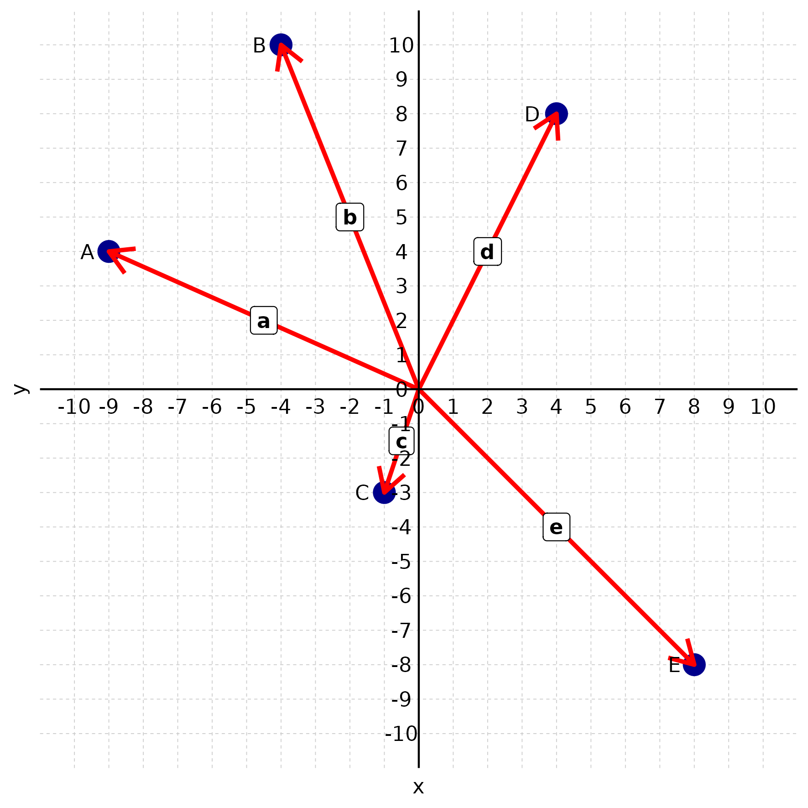
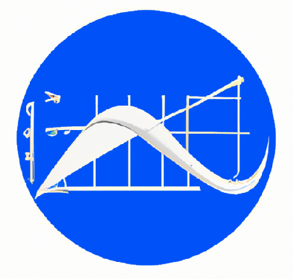

A Geometria e a Álgebra de Vetores
9833 - BASES DA MATEMÁTICA E ESTATÍSTICA PARA CIÊNCIAS DO MAR
Conteúdo da aula
- Definição de Vetores
- Vetores no Plano Cartesiano
- Igualdade de Vetores
- Soma de vetores
- Multiplicação de um vetor por um escalar
- Vetores em \(\mathbb{R}^3\)
- Vetores em \(\mathbb{R}^n\)
- Propriedades Algébricas dos Vetores
Vetores
Definição
Segmento de reta orientado que representa o deslocamento do ponto de origem até um ponto de destino. O vetor de A até B é denotado por \(\mathbf{AB}\), ou \(\vec{AB}\). O ponto A é chamado de ponto inicial (ou origem) do vetor, enquanto o ponto B é chamado de ponto final (ou extremidade). Frequentemente, um vetor é representado por letra minúscula em negrito, como \(\mathbf{v}\) ou ainda por \(\vec{v}\).
- Comprimento: distância entre o ponto inicial e o ponto final do vetor.
- Direção: orientação do vetor no espaço, definida pelo ângulo que faz com os eixos coordenados.
Vetores no Plano Cartesiano
O ponto \(A\) pode ser representado pelo vetor posição que tem início na origem \(O\) e termina no ponto \(A\).
As coordenadas dos vetores são chamadas de componentes do vetor
\(\vec{a} = [-9, 4]\),
\(\vec{b} = [-4, 10]\),
\(\cdots\)
\(\vec{e} = [8, -8]\)

Vetores no Plano Cartesiano
- Um vetor pode ter origem no ponto A e destino no ponto B.
\(\vec{AB} = B - A = [-4, 10] - [-9,4] = [5, 6]\)
\(\vec{CB} = B - C = [-4, 10] - [-1,-3] = [3, 13]\)
\(\vec{DE} = E - D = [8, -8] - [4,8] = [4, -16]\)
Igualdade de Vetores
Considere:
\(A = [-4, -2]\)
\(B = [4, 6]\)
\(C = [-3, -6]\)
\(D = [5, 2]\)
\(E = [-9, 2]\)
\(F = [3, 8]\)

Igualdade de Vetores
Sejam:
\(\vec{AB} = B - A = [4, 6] - [-4, -2] = [8, 8]\)
\(\vec{CD} = D - C = [5, 2] - [-3, -6] = [8, 8]\)
\(\vec{EF} = F - E = [3, 8] - [-9, 2] = [11, 6]\)
Então:
\(\vec{AB} = \vec{CD} \ne \vec{EF}\)
Note
\(\vec{AB} \ne \vec{BA}\)
\(\vec{BA} = A - B = [-4, -2] - [4, 6] = [-8, -8]\)
Soma de vetores
\(\vec{u} = [u_1, u_2]\), \(\vec{v} = [v_1, v_2]\)
\(\vec{u} + \vec{v} = [u_1, u_2] + [v_1, v_2] = [u_1 + v_1, u_2 + v_2]\)
\(\vec{u} = [1, 2]\), \(\vec{v} = [5, 3]\)
\(\vec{u} + \vec{v} = [1, 2] + [5, 3] = [1 + 5, 2 + 3]\)
\(\vec{u} + \vec{v} = [6, 5]\)

Multiplicação de um vetor por um escalar
Seja um escalar \(k\) e um vetor \(\vec{v}\):
\(k \vec{v} = k [v_1, v_2] = [kv_1, kv_2]\)
Para \(\vec{v} = [-2, 4]\):
\(2 \vec{v} = [2(-2), 2(4)] = [-4, 8]\)
\(\frac{1}{2} \vec{v} = [\frac{1}{2} (-2), \frac{1}{2} (4)] = [-1, 2]\)
\(-2 \vec{v} = [-2(-2), -2(4)] = [4,- 8]\)
Vetores em \(\mathbb{R}^3\)
O conjunto de todas as triplas ordenadas de números reais é denotado por \(\mathbb{R}^3\).
\(\vec{v} = [v_1, v_2, v_3]\)
Todas as definições de \(\mathbb{R}^2\) valem para \(\mathbb{R}^3\).
Vetores em \(\mathbb{R}^n\)
Em \(\mathbb{R}^n\), o conjunto de todas as n-uplas ordenadas de números reais, os vetores podem ser representados como linhas ou colunas, com suas entradas denominadas componentes.
\(\vec{v} = [v_1, v_2, \ldots, v_n]\)
As operações de adição de vetores e multiplicação por escalar são definidas de maneira natural. Por exemplo, para os vetores \(\vec{u} = [u_1, u_2, \ldots, u_n]\) e \(\vec{v} = [v_1, v_2, \ldots, v_n]\), a i-ésima componente de \(\vec{u} + \vec{v}\) é \(u_i + v_i\), e a i-ésima componente de \(k\vec{v}\) é \(kv_i\).
Propriedades Algébricas de Vetores em \(\mathbb{R}^n\)
Sejam \(\vec{u}\), \(\vec{v}\) e \(\vec{w}\) vetores em \(\mathbb{R}^n\), e \(k\) e \(l\) escalares. Então:
| Propriedade | Descrição | |
|---|---|---|
| 1 | \(\vec{u} + \vec{v} = \vec{v} + \vec{u}\) | Comutatividade |
| 2 | \((\vec{u} + \vec{v}) + \vec{w} = \vec{u} + (\vec{v} + \vec{w})\) | Associatividade |
| 3 | \(\vec{u} + \vec{0} = \vec{u}\) | |
| 4 | \(\vec{u} + (-\vec{u}) = \vec{0}\) | |
| 5 | \(k(\vec{u} + \vec{v}) = k\vec{u} + k\vec{v}\) | Distributividade |
| 6 | \((k + l)\vec{u} = k\vec{u} + l\vec{u}\) | Distributividade |
| 7 | \(k(l\vec{u}) = (kl)\vec{u}\) | |
| 8 | \(1\vec{u} = \vec{u}\) |
Combinações Lineares
Uma combinação linear de vetores é um vetor obtido como a soma ponderada de outros vetores, onde cada vetor é multiplicado por um escalar.
Definição
Formalmente, um vetor \(\vec{v}\) é dito ser uma combinação linear dos vetores \(\vec{v}_1, \vec{v}_2, \ldots, \vec{v}_k\) se existirem escalares \(c_1, c_2, \ldots, c_k\) tais que:
\[\vec{v} = c_1 \vec{v}_1 + c_2 \vec{v}_2 + \cdots + c_k \vec{v}_k\]
Os escalares \(c_1, c_2, \ldots, c_k\) são chamados de coeficientes da combinação linear. Em outras palavras, \(\vec{v}\) é construído a partir dos vetores \(\vec{v}_1, \vec{v}_2, \ldots, \vec{v}_k\) pela combinação dos seus múltiplos escalares. Essa definição é fundamental na álgebra linear, pois permite a construção de vetores em um espaço vetorial a partir de uma base de vetores dados.
Combinações Lineares
Considere os vetores \(\vec{v}_1 = \begin{pmatrix} 1 \\ 2 \end{pmatrix}\) e \(\vec{v}_2 = \begin{pmatrix} 3 \\ 4 \end{pmatrix}\) no espaço \(\mathbb{R}^2\) e os escalares \(c_1 = 2\) e \(c_2 = -1\).
\[\vec{v} = c_1 \vec{v}_1 + c_2 \vec{v}_2\]
\(\vec{v} = 2 \begin{pmatrix} 1 \\ 2 \end{pmatrix} + (-1) \begin{pmatrix} 3 \\ 4 \end{pmatrix} = \begin{pmatrix} 2 \cdot 1 \\ 2 \cdot 2 \end{pmatrix} + \begin{pmatrix} -1 \cdot 3 \\ -1 \cdot 4 \end{pmatrix} = \begin{pmatrix} 2 \\ 4 \end{pmatrix} + \begin{pmatrix} -3 \\ -4 \end{pmatrix} = \begin{pmatrix} 2 - 3 \\ 4 - 4 \end{pmatrix} = \begin{pmatrix} -1 \\ 0 \end{pmatrix}\)
Portanto, o vetor \(\vec{v} = \begin{pmatrix} -1 \\ 0 \end{pmatrix}\) é uma combinação linear dos vetores \(\vec{v}_1\) e \(\vec{v}_2\) com os coeficientes dados \(c_1 = 2\) e \(c_2 = -1\).
Note
Para visualizar a ideia de combinações lineares, acesse o GeoGebra.

BICT Mar - Unifesp